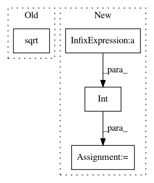

f922a9824d2ecd781666a594d941f4a60d9a79a1,tests/transforms_tests/image_tests/test_random_sized_crop.py,TestRandomSizedCrop,test_random_sized_crop,#TestRandomSizedCrop#,19
Before Change
def test_random_sized_crop(self):
img = np.random.uniform(size=(3, self.H, self.W))
scale_ratio_interval = (np.sqrt(0.08), 1)
aspect_ratio_interval = (3 / 4, 4 / 3)
out, params = random_sized_crop(img, scale_ratio_interval,
aspect_ratio_interval,
After Change
a = params["aspect_ratio"]
expected_H_crop = int(math.floor(
np.sqrt(s * self.H * self.W * a)))
expected_W_crop = int(math.floor(
np.sqrt(s * self.H * self.W / a)))
self.assertEqual(H_crop, expected_H_crop)
self.assertEqual(W_crop, expected_W_crop)
self.assertTrue(
In pattern: SUPERPATTERN
Frequency: 3
Non-data size: 4
Instances
Project Name: chainer/chainercv
Commit Name: f922a9824d2ecd781666a594d941f4a60d9a79a1
Time: 2017-09-28
Author: yuyuniitani@gmail.com
File Name: tests/transforms_tests/image_tests/test_random_sized_crop.py
Class Name: TestRandomSizedCrop
Method Name: test_random_sized_crop
Project Name: chainer/chainercv
Commit Name: fe9b27b4e279a45a4aa16c3b289c4e600384b4da
Time: 2017-09-29
Author: yuyuniitani@gmail.com
File Name: tests/transforms_tests/image_tests/test_random_sized_crop.py
Class Name: TestRandomSizedCrop
Method Name: test_random_sized_crop
Project Name: tgsmith61591/pmdarima
Commit Name: 0710d3a704994e5862a3b037bd91213bae1d9f10
Time: 2018-12-17
Author: tgsmith61591@gmail.com
File Name: pmdarima/arima/stationarity.py
Class Name: KPSSTest
Method Name: is_stationary